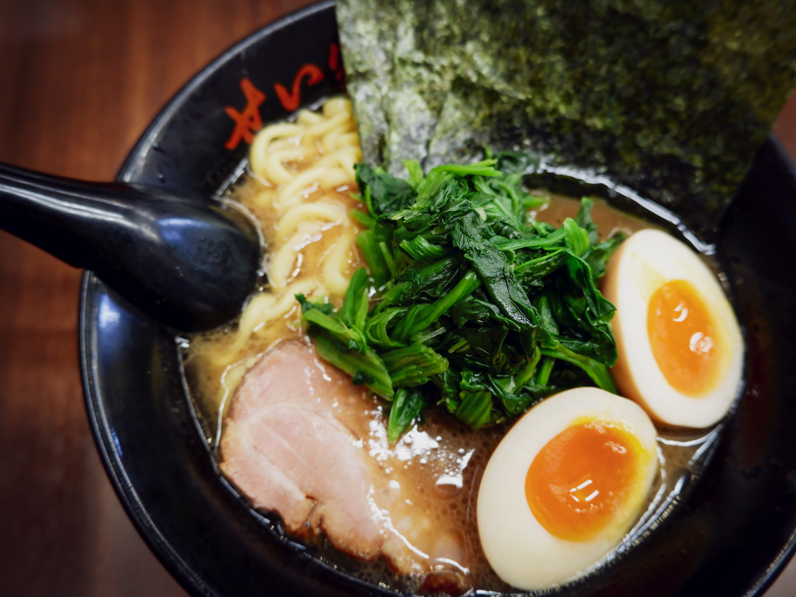
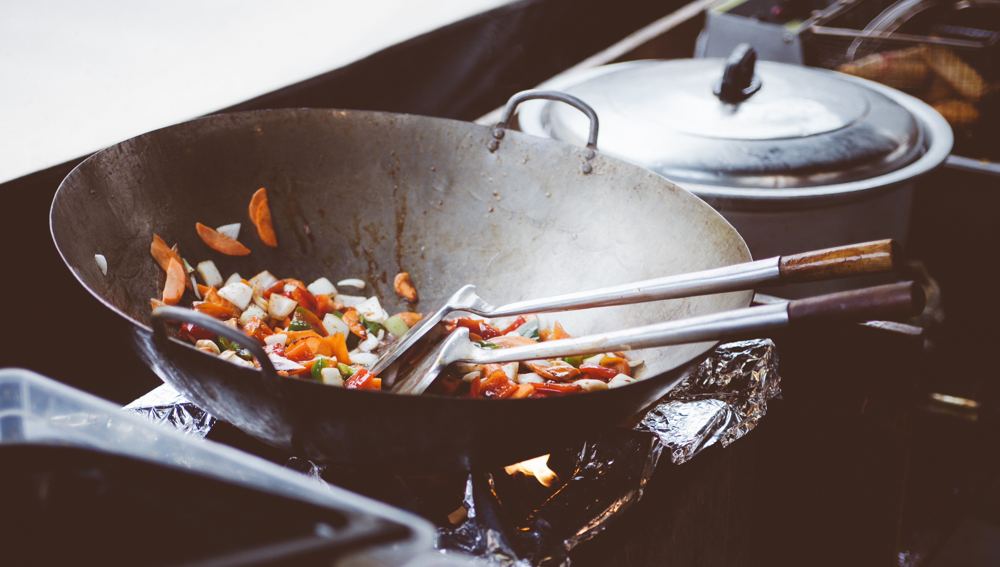

Menu
Appetizers

-
Edamame
Steamed soybeans with sea salt. A classic Japanese appetizer that's healthy and delicious.
$4.99
-
Gyoza
Pan-fried dumplings filled with pork and vegetables. Served with a tangy soy dipping sauce.
$6.99
-
Agedashi Tofu
Lightly battered tofu cubes fried to crispy perfection, served in a savory broth and topped with scallions and grated daikon radish.
$5.99
-
Takoyaki
Octopus balls made with a batter of flour, eggs, and dashi. Served hot and crispy with a sweet and savory sauce, mayonnaise, and bonito flakes.
$7.99
-
Tempura Shrimp
Lightly battered shrimp fried to golden perfection. Served with a side of tempura sauce and grated daikon radish.
$8.99
-
Salmon Tartare
Fresh salmon diced and mixed with avocado, cucumber, and spicy mayo. Served with crispy wonton chips.
$9.99
Entrees
-
Sushi Platter
Assorted sushi rolls including tuna, salmon, and California rolls. Served with miso soup and salad.
$18.99
-
Tempura Shrimp and Vegetable
Crispy tempura battered shrimp and mixed vegetables. Served with tempura sauce and steamed rice.
$16.99
-
Beef Teriyaki
Grilled beef tenderloin glazed with teriyaki sauce. Served with sautéed vegetables and steamed rice.
$19.99
-
Chicken Katsu
Breaded and fried chicken cutlet served with tonkatsu sauce, shredded cabbage, and steamed rice.
$14.99
-
Nabeyaki Udon
Thick udon noodles in a savory broth with chicken, shrimp, fish cake, and vegetables. Served in a hot pot with a side of tempura.
$15.99
-
Miso Salmon
Grilled salmon fillet marinated in a miso glaze. Served with sautéed spinach and steamed rice.
$17.99
Straight from the Wok
-
Beef Stir Fry
Tender beef slices stir-fried with mixed vegetables and served over a bed of steamed rice.
$15.99
-
Chicken Teriyaki Stir Fry
Sliced chicken breast stir-fried with teriyaki sauce, mixed vegetables, and served over a bed of steamed rice.
$13.99
-
Shrimp and Broccoli Stir Fry
Jumbo shrimp and broccoli florets stir-fried in garlic sauce and served over a bed of steamed rice.
$16.99
-
Vegetable Fried Rice
Fried rice with mixed vegetables, eggs, and soy sauce. Served with a side of miso soup.
$12.99
-
Spicy Tofu and Vegetable Stir Fry
Crispy tofu cubes stir-fried with mixed vegetables in a spicy sauce. Served over a bed of steamed rice.
$13.99
-
Salmon and Asparagus Stir Fry
Grilled salmon fillet and asparagus stir-fried in garlic sauce and served over a bed of steamed rice.
$17.99
Drinks
-
Matcha Latte
A traditional Japanese drink made with matcha powder and steamed milk.
$4.99
-
Sakura Blossom Tea
A delicate cherry blossom tea with a light and refreshing flavor.
$3.99
-
Yuzu Lemonade
A citrusy blend of yuzu juice, lemon, and sugar, served over ice.
$4.49
-
Sake Martini
A classic cocktail made with Japanese sake and vermouth, garnished with a twist of lemon.
$7.99
-
Umeboshi Plum Soda
A sweet and tangy soda made with pickled Japanese plums and soda water.
$3.49
-
Mango Green Tea
A refreshing blend of green tea and fresh mango puree, served over ice.
$4.99